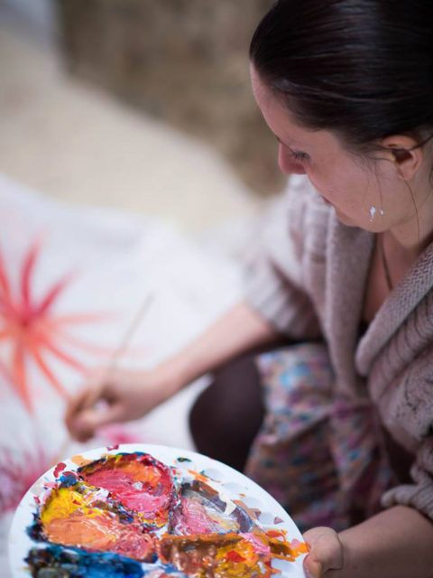

About Lenka
From Fine Art to Somatic Healing — A Life's Journey
The Journey
Lenka Kolárová began her professional life as a visual artist. She studied fine art and graphic design at the Václav Hollar School of Fine Arts in Prague, trained in puppetry at university, and spent a decade working as an advertising and graphic designer. But a deeper calling pulled her toward the body.
In 2009, she made the pivotal transition into somatic work. She left Prague for England, spending 14 years training intensively in holistic medicine, body-centered therapies, and healing modalities. Her artistic sensitivity combined with rigorous clinical training to produce something rare: a practitioner who sees the whole person.

She trained at the British School of Biodynamic Craniosacral Therapy, completing a comprehensive two-year programme and specialising in work with pregnant women, infants, and mothers navigating birth trauma. She then undertook a three-year Somatic Experiencing® certification — the trauma-release methodology developed by Dr. Peter Levine — which became the cornerstone of her practice.
Along the way she trained in Thai therapeutic massage in Chiang Mai, Kundalini yoga instruction, drama therapy and voice work, Ayurvedic medicine, and Tibetan Buddhist philosophy. Each tradition has deepened her capacity to meet clients with a truly integrated, whole-person approach.
Today, based in Prague, Lenka brings all of this — her artistic eye, her clinical depth, her Eastern wisdom, and her unwavering commitment to safety and presence — to every session. Whether working with individuals, families, artists, or groups, she creates spaces where the body's natural healing capacity can emerge.
Guiding Philosophy
The Body Knows
The body carries profound wisdom — including the capacity to heal when given safety, presence, and the right conditions. Lenka's role is to create the conditions, not to "fix."
Safety Before Everything
No meaningful healing happens without safety. Every session begins by establishing a genuine sense of security in the nervous system — only then does deeper work become possible.
Responsibility & Compassion
Lenka works with deep compassion while also supporting personal agency in the healing journey. This balance produces sustainable, lasting change.
Training & Credentials
15+ years of professional training spanning somatic therapy, craniosacral work, Eastern medicine, and creative arts.
Somatic & Trauma
- Three-year Somatic Experiencing® certification
- Advanced trauma & nervous system training
- Post-graduate work with mothers & infants
- Certified SE Practitioner (SEP)
Craniosacral & Bodywork
- British School of Biodynamic Craniosacral Therapy (2 yrs, London)
- Specialist training with infants & mothers
- Thai therapeutic massage (Chiang Mai)
- Member, Craniosacral Association
Holistic & Creative Arts
- Fine art — Václav Hollar School, Prague
- Drama therapy & voice instruction
- Kundalini yoga certification
- Ayurveda & Tibetan Buddhist studies
How the Year Is Structured
Lenka's practice follows the seasons, blending in-person depth with retreat facilitation and online reach.
🌿 May – October · Prague Practice
Individual somatic sessions, craniosacral therapy, Thai massage, and specialised work with mothers and infants — in person in Prague.
🌏 November – April · Retreats in India
Lenka leads 14-day Panchakarma Ayurvedic retreats in Goa — combining traditional detox, yoga, meditation, and therapeutic support. She serves as facilitator, interpreter, and cultural guide.
💻 Year-Round · Online Sessions
Somatic and trauma-informed sessions available online for clients across Europe and beyond. Much of Lenka's work translates beautifully to video.
🎨 Ongoing · Art Teaching & Nature Programs
Beyond her therapeutic practice, Lenka teaches drawing through Learn Drawing and leads healing hikes through Czech Adventure.
Connect With Lenka
Ready to experience her integrative approach? Sessions are available in-person in Prague and online.